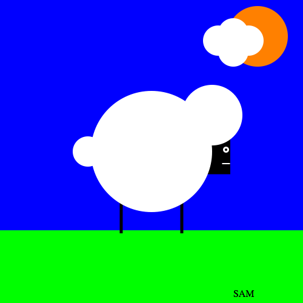
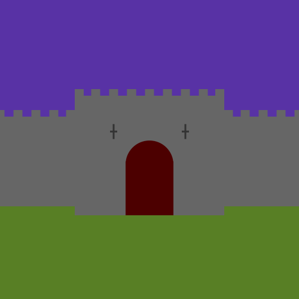
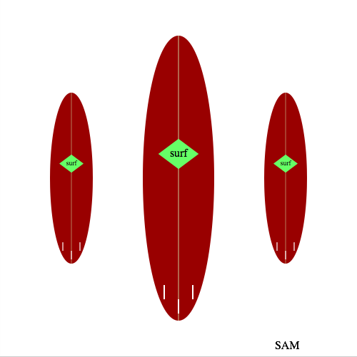
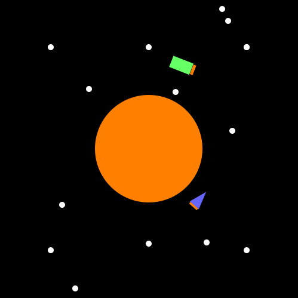
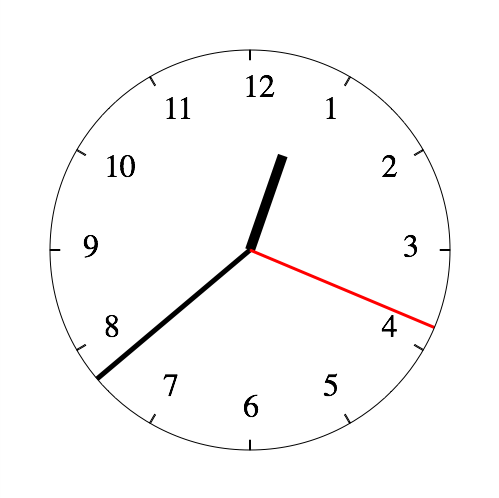

I've been inspired by the efforts of others (Chris Smith, Manuel Chakravarty) to try teaching children haskell as a first experience of programming. Haskell has a reputation of being a "hard" language, but I suspect this stems from the challenges faced by software developers transitioning from an imperative programming paradigm to a functional one. There's anecdotal evidence that, for first steps into programming, a functional programming language may be easier for many students, and allow a class to focus more quickly on interesting aspects of programming.
With any group of beginners, and especially children, simple tooling is really important. Being able to run examples in minutes of turning on the computer is really important. But running even the simplest of traditional toolchains requires at least a rudimentary understanding of:
- a text editor
- the file system
- a command line
- an interpreter/compiler
And there's platform issues here also - even when the language is platform independent the other items will vary. It would be very easy to get bogged down in all this well before actually writing a program that does something interesting...
Hence I was excited several weeks ago when Chris announced the reimplementation of his codeworld environment. In a nutshell, it's a web site where:
1) you edit haskell code in your browser 2) it gets compiled to java script on the remote server using ghcjs 3) the javascript runs back in the browser
and it comes with a beginner-friendly prelude focussed on creating pictures, animations, and simple games (no monads required!).
This was just in time for school holidays here in Sydney - my own children to be my "guinea pig" students. Nick (aged 14) is in year 9 at school, whereas Sam (aged 12) is in year 7. At school they have covered simple algebra, number planes, and other math ripe to be used for something more fun than drill exercises! They have a younger brother Henry (aged 10), who has being observing with interest.
Our goal is to learn to draw pictures, then move on to animations, and, further down the track (if we get there) write some games. After a couple of 2 hour sessions, it has gone remarkably well.
So what have we done? Here's a short outline of our two sessions so far:
Session 1 (2.5 hours):
We discussed the nature of computers, programming languages, compilers.
We launched the codeworld environment, and played with the demos. We tried changing them, mostly by adjusting various constants, and found they broke in often entertaining ways.
We typed in a trivial 2 line program to draw a circle, and made it work. We observed how problems were reported in the log window.
We talked about what a function is, and looked at a few of the builtin functions:
solidCircle :: Number -> Picture
color :: Color -> Picture -> Picture
(&) :: Picture -> Picture -> Picture... and looked at how they can be composed using haskell syntax.
Then we played!
After this, we introduced some extra functions:
solidRectangle :: Number -> Number -> Picture
translate :: Number -> Number -> Picture -> Picture
rotate :: Number -> Picture -> Picture
scale :: Number -> Number -> Picture -> Picturewhich let us draw much more interesting stuff. The rest of this session was spent seeing what cool stuff we could draw with these 7 functions.
Nick programmed some abstract art:
Sam coded up a sheep:

That ended the session, though the boys found some unsupervised time on the computer the next day, when Nick built a castle:

and Sam did some virtual surfing:

Session 2 (2 hours):
In the second session, we started by talked about organising code for clarity and reuse.
The transformation functions introduced in the previous session caused some confusion when used in combination. We talked about how each primitive worked, and how they combined - the different between rotating and then translating versus translating then rotating was investigated.
The boys were keen to move on to animations. I thought we'd leave this for a few sessions, but their enthusiasm overruled. This required that we looked at how to write our own functions for the first time. (In codeworld an animation is a function from time to a picture). This is quite a big step, as we needed to get at least a basic idea of scoping also.
Nevertheless we battled on, and got some movement on the screen. It was soon discovered that rotations are the most interesting transform to animate, as you don't lose you picture elements off the screen as time goes to infinity!
Nick and Sam needed more assistance here, but still managed to get some ideas working. I've only got single frames of their results. Sam produced his space race:

and Nick made a working clock (which tells the right time if you push the run button at 12 oclock!):

In the next session we are going to have to look at numerical functions in a bit more detail in order to produce more types of animations. Time for some graph paper perhaps...
Summary
For a beta (alpha?) piece of software, relying on some fairly advanced and new technology, Codeworld works remarkably well. And Chris has plans for it - there's a long list of proposed enhancements in the github issue tracker, and a mailing list has just been created.
Right now the main issue is documentation. It works well with an already haskell-literate tutor. Others may want to wait for the documentation, course guides, etc to be written.
If you are a haskell enthusiast, Give it a try!